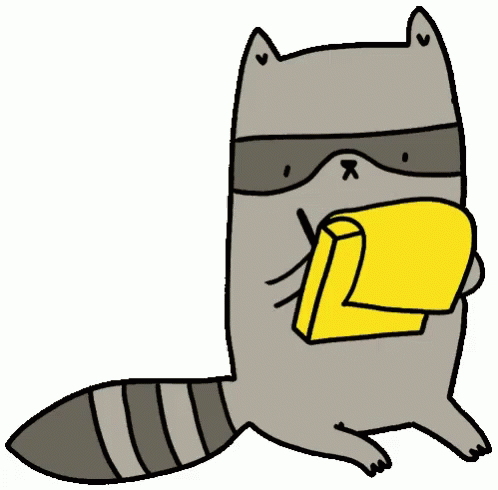

Research Associate @UNIBO/DH.arc
Research Associate at /DH.arc of the University of Bologna. She holds a master degree in History (LM84) and a PhD in Library and Information Science from the University of Bologna. She worked as metadata specialist and ontology engineer at the Multimedia Research Centre (CRR-MM) of the University of Bologna and she was consultant at the Knowledge Media Institute (KMI), Open University, Milton Keynes (UK). Currently, she is also Managing Editor of the academic journal Umanistica Digitale, and she works as a consultant for the Federico Zeri Foundation (Bologna). She is representative on behalf of the Foundation in a number of committees, including the PHAROS consortium and the Linked.art project. She is currently involved in The Open Biomedical Citations in Context Corpus project to enhance the OpenCitations Corpus with annotated in-text references of citations.
Activities, events, and other things related to the ongoing project The Open Biomedical Citations in Context Corpus.
 [I had to..they are watching me]Digital Humanities is a thing. Doing it for real is something else.
After a five-year experience with art historical photo archives and cultural heritage institutions on the application of Semantic Web technologies to cataloguing data, I recently moved into the marvellous world of Open Science, where I found legendary beasts such as open citations, text mining techniques, and bibliometrics.
In the last years I've been involved is several projects related to cultural heritage data and bibliographical data.
2019-ongoing
Semantic publishing // Open Citations
A new project to enhance the OpenCitations Corpus, as part of the Open Research Fund programme.
The objective is to extract citations from scholarly publications and provide data for each individual in-text reference and its semantic context, making it possible (1) to distinguish references that are cited only once from those that are cited multiple times, (2) to see which references are cited together (e.g. in the same sentence), (3) to determine in which section of the article references are cited (e.g. Introduction, Methods), and, potentially, (4) to retrieve the function of the citation. The Open Biomedical Citations in Context Corpus is a project funded by the Wellcome Trust for 12 months from July 2019, that will make the OpenCitations Corpus (OCC) more useful to the academic community by significantly expanding the kinds of citation data held within the Corpus.
2019
Digital Art History // Cultural Heritage Data Management
A LOD-based cataloguing system of notable art historians' collections.
The objective of ARTchives is to create a knowledge graph of art historians’ archives for historiographical research purposes, so that users can identify and retrieve archival fonds relevant to their studies, and researchers can answer research questions related to historiographical topics, such as: historians’ relations, debate on research topics, bibliographic sources addressing such topics. Several institutions contribute to the project, namely: the Federico Zeri Foundation (Bologna, Italy), University Roma Tre (Rome, Italy), Scuola Normale Superiore (Pisa, Italy), Biblioteca Hertziana (Rome, Italy), Kunsthistorisches Institut in Florenz (Florence, Italy), Getty Research Institute (Los Angeles, USA).
2018-2019
Digital Art History // Library and Information Science
A Semantic Crawler and recommending system of artwork attributions.
mAuth is a proof-of-concept tool for art historians, data collection managers, and curious, who want to collect information - historians' opinions, motivations, bibliographic references, and images - about the history of authorship attributions related to artworks of the Modern Art (15-16th centuries). The aim is leveraging Semantic Web technologies to (a) support historians' daily tasks (such as retrieving information and sources), (b) evaluate the methodology underpinning decisions made by art historical data providers, and (c) investigate how concepts like 'authoritativeness' can be automatically interpreted given a set of rules and believes shared in a community. Attributions are sorted so as to immediately highlight the most well-documented, updated, and authoritative ones. The ranking is based on common requirements in the art historical methodology - e.g. timeliness of the attribution, completeness of information, and trustworthiness of the source of information.
Related publications:
2018
Semantic publishing // Open Citations
A prototype for bibliographic references correction and creation of Linked Open Data according to the OpenCitations data model.
The objectives of the BCite project are twofold: (a) provide a basic workflow that supports editors in the management and correction of bibliographic references, and (b) develop a tool that creates open citation data compliant with an existing RDF-based citation repository: the OpenCitations Corpus
Related publications:
2018
Library and Information Science // Cultural Heritage Data Management
Application for playing and transforming MIDI tracks in Linked Open Data, populating the MIDI KG and recommending to users related resources.
The objectives of the BCite project are twofold: (a) provide a basic workflow that supports editors in the management and correction of bibliographic references, and (b) develop a tool that creates open citation data compliant with an existing RDF-based citation repository: the OpenCitations Corpus
Related publications:
2018
Semantic publishing // Digital Philology
Linked data-based digital scholarly edition of the notable Bufalini’s notebook.
2017
Library and Information Science // Cultural Heritage Data Management
Linked-data based catalogue of online musical resources.
The contributions of the musoW project are the following: (a) a LOD dataset of catalogued musical resources, as well as a related list of significant SPARQL queries; (b) An analysis of the distinguishing features of each type of data; (c) a set of research themes that are the focus of data oriented musical research, extracted from the corpus; (d) and assessment of the LD-readiness of the resources, by classifying the resources with respect to the 5-Star Web of Data schema.
Related publications:
2015-2017
Digital Art History // Cultural Heritage Data Management
Ontologies and Linked Open Data publication of the catalogue of the Federico Zeri Foundation.
Related publications:
2019
2019
2017
2016
2015
2018
2017
2016
2015
2017
2016